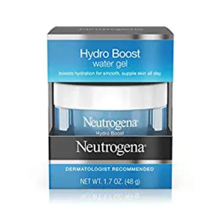

The Best Moisturizer For Dry Skin Reviews
– 2019 Top Picks
At A Glance: Our Choices For The Best Moisturizers
For Dry Skin
-
Choose Neutrogena Hydro Boost Gel Cream if you are looking for the best moisturizer
for dry skin. It contains hyaluronic acid and olive oil extract to keep your skin hydrated
and moisturized. -
Containing vitamin E and jojoba oil, Nivea Soft Moisturizing Creme is a staple product in
most homes. It’s a great moisturizer you can use on your face, body and hands. -
Eucerin Lotion, Intensive Repair is a great moisturizer for dry skin you can use for the
whole body. It’s fragrance-free, non comedogenic and formulated with NMF and alpha
hydroxy acid to help get rid of dry, flaky and ashy skin. -
Neutrogena Healthy Skin Anti-Wrinkle Cream is a highly recommended product for those
who have mature dry skin. It’s formulated with retinol, vitamin E and green tea extract to
keep your skin young-looking and healthy. -
Pick Physicians Formula Organic Wear 100% Natural Tinted Moisturizer if you are looking
for something that can cover your mild blemishes. It’s thin and easy to blend, making it
perfect for everyday wear.
2017’s Reviews And Comparisons Of The Best
Moisturizers For Dry Skin
|
Rankings |
Image |
Product Name |
Editor’s Rating |
Price |
|---|---|---|---|---|
#1 |
Neutrogena Hydro Boost Gel Cream | CHECK PRICE | ||
#2 |
Nivea Soft Moisturizing Creme | CHECK PRICE | ||
#3 |
Eucerin Lotion, Intensive Repair | CHECK PRICE | ||
#4 |
Neutrogena Healthy Skin Anti-Wrinkle Cream | CHECK PRICE | ||
#5 |
Physicians Formula Organic Wear 100% Natural Tinted Moisturizer | CHECK PRICE |
Best Moisturizer For Dry Skin
#1 Neutrogena Hydro Boost Gel Cream-
Neutrogena Hydro Boost Gel Cream is a
definite must-try if you are looking for the
best moisturizer for dry skin. One good
reason is its formula. -
This moisturizer is fragrance-free. It won’t
annoy your nose or trigger your sensitive
skin. -
Apart from that, it also has these
ingredients that promise a lot of good
things for your skin. -
For one, it has purified hyaluronic acid. It’s
a humectant that works to absorb, seal in
and boost your skin’s moisture level.
-
The product also has olive extracts which are known to possess great moisturizing
properties. It also has antioxidant benefits that can protect your skin against oxidative damage. -
For its packaging, I’d say it’s pretty. Unfortunately, the product comes in a jar which
means you’ll have to scoop it out. -
This moisturizer for dry skin gets absorbed instantly. It feels lightweight and isn’t tacky on
the skin. -
You’ll be able to apply your makeup without the long wait and without having to worry
about your foundation looking patchy.
Things We Liked
- Quickly absorbed
- Lightweight
- Doesn’t feel tacky
- Contains hyaluronic acid
Things We Didn't Like
- Packaging isn’t hygienic
- A bit expensive for a drugstore product
Best Moisturizer For Dry Skin
#2 Nivea Soft Moisturizing Creme-
Nivea Soft Moisturizing Creme contains jojoba oil and vitamin E to give you soft and youthful looking skin. It has a creamy consistency that won’t feel too heavy or annoying on your skin.
-
Plus, it’s fast absorbing, too.What nice about this product is that it has been dermatologist tested and approved to ensure your skin won’t be compromised. Although it can work on all skin types, it will suit dry skin the best.
-
It’s formulated to penetrate the deeper layers of the skin which makes it highly effective in doing its job.
-
Nivea Soft Moisturizing Creme comes in a small tub. Although convenient for carrying
around, it’s not the best packaging. -
Because it’s in a tub, you’ll have to dip your fingers in it each time you’ll use it. This can
compromise the product inside and make you more prone to skin breakouts. -
This moisturizer has a soft texture and a little goes a long way. One tub can last you for
months.However, since it’s a moisturizer that can be used on face, hands and body, you
might run out of it sooner. -
Another issue you may encounter with this product is its scent. It has this distinct
fragrance you can get from most Nivea products.
Things We Liked
- Penetrates the skin’s deeper layers
- Can be used on face, body and hands
- Affordable
- A little goes a long way
- Can work on all skin types
Things We Didn't Like
- Scented
- Packaging is unhygienic
Best Body Moisturizer For Dry Skin
#3 Eucerin Lotion, Intensive Repair-
For something you can use for the body, Eucerin Lotion, Intensive Repair is your best option. It’s fragrance-free and noncomedogenic.
-
These two things are what you should be looking out for if you have acne-prone, oily or sensitive skin. Of course, this fits dry skin type, too.
-
Apart from providing hydration and moisture, you’ll love that this moisturizer is able to gently buff away dead skin cells. For someone who has dry skin, you know how unpleasant having rough skin is.
-
This lotion is on the thicker side. Unfortunately, this means that it can take a bit longer to
get absorbed. -
It feels a bit greasy. However, once it fully sets in, you’ll be left with hydrated, soft and
smooth skin.
Things We Liked
- Gently exfoliates
- Noncomedogenic
- Packaging comes with a pump
Things We Didn't Like
- A bit greasy
- Can take a while to set
Best Moisturizer For Dry Aging Skin
#4 Neutrogena Healthy Skin Anti-Wrinkle Cream-
Neutrogena Healthy Skin Anti-Wrinkle Cream is a fragrance-free moisturizer you can use for the dry skin on your face. Take note that this is a retinol face cream so, in essence, it can help reduce the appearance of fine lines and wrinkles.
-
It can also improve your skin’s texture by enhancing its regeneration process. The product is noncomedogenic, too.
-
Because of this property, if you also happen to have acne-prone skin, this moisturizer is a great product to add to your routine. One caveat, though.
-
Because this product contains retinol, make sure you check with your dermatologist first to know if it will not cause any adverse reaction when used with your existing anti-acne treatment.
-
Using more than one retinol product at the same time isn’t really recommended.
-
Aside from retinol, this moisturizer also has green tea extract to help with skin repair and glycerin to moisturize your skin. And did I mention it has SPF, too?
-
Although its SPF is a bit lower (SPF 15), having minimal sun protection is better than
having none, right? To stay safe, however, you should consider using a separate
sunscreen. -
We have a list of the best sunscreen for dry skin you should check out.
Things We Liked
- Contains retinol
- Oil-free
- Non-comedogenic
- Has anti-aging ingredients
Things We Didn't Like
- Has SPF 15 only
- Can increase sun sensitivity
Best Moisturizer For Extremely Dry Skin
#5 Physicians Formula Organic Wear 100% Natural Tinted Moisturizer-
For the best moisturizer for dry skin that can give you a hint of coverage, go with Physicians Formula Organic Wear 100% Natural Tinted Moisturizer.
-
It is formulated with SPF 15 and made from organic ingredients. It doesn’t contain parabens, fragrances or even GMOs.
-
The moisturizer has a thin consistency which makes it easy to apply and spread. It has a lavender scent which is nice, but it can also be a major turn off if you’re not into that kind of fragrance.
-
As for coverage, it can only cover minimal or mild blemishes. If you have lots of dark spots, there are great concealers for your skin type.
-
You can check out our review of the best concealers for dry skin to know what I’m talking about.
-
This tinted moisturizer dries down to a dewy finish, which is good for your skin. It won’t accentuate or cling to your dry patches.For the shades, it offers four options. There’s fair-to-light, ivory-to-fair, light-to-natural and natural-to-tan.
Things We Liked
- Has SPF 15
- Made from organic ingredients
- Has no parabens or GMOs
- Easy to blend
Things We Didn't Like
- Lavender scent may not be for everyone
- Coverage is minimal
Best Moisturizer For Dry Sensitive Skin
#6 Kind to Skin Facial Moisturizer By Simple-
For long-lasting moisture that won’t irritate your dry, sensitive skin, Kind to Skin Facial Moisturizer By Simple makes a great product. It can double your skin’s hydration and keep it that way for as 24 hours.
-
That’s thanks to the product’s great list of ingredients. There’s bisabolol, allantoin and glycerin.
-
This moisturizer is formulated without harsh chemicals or artificial perfumes that can trigger negative reactions. What it does have, apart from the ingredients I mentioned, is triple purified water.
-
It also has chamomile, which is known for its ability to soothe the skin. There’s vitamin B5 in the list, too.
-
The product has a smooth texture. It does feel a bit greasy at first, but that will start wearing off as soon as the product gets absorbed into the skin.
-
It feels lightweight that you’ll barely feel it’s there. Even if you wear foundation over it, you won’t have to worry about your skin looking patchy and clumpy.
Things We Liked
- Doubles skin’s hydration
- Has vitamins
- Has no harsh chemicals
- Lightweight
Things We Didn't Like
- Feels slightly greasy during application
- Still has an intrinsic smell
Best Hand Moisturizer For Dry Skin
#7 O'Keeffe's Working Hands Hand Cream-
For hands that turn flaky, rough and dry, O’Keeffe’s Working Hands Hand Cream comes highly recommended. What it basically does is create a barrier on the surface of your skin to boost its moisture and to make sure there’s no moisture loss.
-
These things are made possible with its glycerin and paraffin content.
-
This moisturizer for the hands is non-greasy and hypoallergenic. Even those with diabetes can safely use the product.It’s unscented, too, so those with sensitive noses won’t feel bothered.
-
I’d have to warn you, however, that although it claims to be non-greasy, you’ll still feel a
waxy film on your hand. -
To get the most out of this product, it’s recommended that you use it a couple of times a
day. You should use it after each time you wash your hands or as an overnight treatment. -
Take note that you don’t have to use too much product. A little goes a long way for this
one.
Things We Liked
- Unscented
- A little goes a long way
- Affordable
Things We Didn't Like
- Leaves a waxy feeling
- Needs to be used a couple of times a day to see dramatic improvements
Best Moisturizer For Dry Acne Prone Skin
#8 InstaNatural Acne Moisturizer for Face-
Formulated with 0.5% salicylic acid, InstaNatural Acne Moisturizer for Face can help you get rid of your acne and blemishes as you’re moisturizing your skin. Salicylic acid, in case you are wondering, has the ability to exfoliate the impurities on the surface of your skin.
-
Apart from acne, it can also help you get clearer skin.
-
Despite that property, this product won’t dry your skin out. And it’s not completely mattifying either.
-
It’s one of the few moisturizers that can work on dry, acne prone skin. But, there’s a catch.
-
Since there’s salicylic acid, it does have the tendency to cause a bit of dryness as well as peeling. If that is the case, you should consider using a non-comedogenic moisturizer to help your skin.
Things We Liked
- Contains salicylic acid
- Can clear blemishes
- Doesn’t feel sticky
Things We Didn't Like
- May cause irritation on sensitive skin
Best Organic Face Moisturizer For Dry Skin
#9 Aloe Infusion Face And Body Cream-
Aloe Infusion Face And Body Cream makes a great choice if you are looking for something organic. It actually contains a handful of interesting ingredients that will surely benefit your dry skin.
-
For one, there’s organic aloe vera. It’s an ingredient that’s widely used in cosmetic formulations because of its great moisturizing properties.
-
And then there’s shea butter, manuka honey and grapeseed oil. Shea butter can penetrate the deeper layers of your skin while grape seed oil helps with skin repair.
-
With these ingredients, the product is able to provide long lasting moisture- up to 12
hours. -
Despite the moisturizing properties of this cream, it doesn’t really feel heavy on the skin.
It doesn’t leave streaks, too. -
It gets absorbed quickly and works well under makeup. Unlike most moisturizers for dry
skin, you can use this one on your face and body.
Things We Liked
- Long lasting
- Good for both face and body
- Works well on eczema and psoriasis
- Available in different sizes
Things We Didn't Like
- Pricey
Best Moisturizer For Dry Skin With SPF
#10 L'Oreal Paris Ideal Moisture Day Lotion SPF 25, Dry Skin-
L'Oreal Paris Ideal Moisture Day Lotion SPF 25 doesn’t cost that much but the benefits you’ll get from this one are something your skin will surely look forward to. It’s oil-free and feels barely there on your skin.
-
It’s also noncomedogenic and dermatologist tested.
-
L’Oreal promises to deeply nourish your skin so it’ll feel soft and moisturized. It claims to be able to do that in an instant.
-
There’s no detectable scent with the product which is good news. And despite having SPF 25, it doesn’t leave a white cast on your skin.
-
The product, however, tends to lean more on the thicker side. It doesn’t get absorbed that fast, too.
-
If you don’t mind waiting for a few more minutes for it to set, this product makes a great investment. Though, it’s actually affordable.
Things We Liked
- Oil-free
- Doesn’t clog pores
- Doesn’t leave a white cast
- Affordable
Things We Didn't Like
- Has a thick consistency
- Takes awhile to get absorbed
Reviews And Comparisons Of The Best Moisturizers
For Dry Skin


Rankings |
Best Moisturizer For Dry Skin |
Best Drugstore Moisturizer For Dry Skin |
Best Body Moisturizer For Dry Skin |
Best Moisturizer For Dry Aging Skin |
Best Moisturizer For Extremely Dry Skin |
|---|---|---|---|---|---|
Top-Rated Moisturizers For Dry Skin 2017 |
 |
 | |||
Brand |
Neutrogena | Nivea | Eucerin | Neutrogena | Physicians Formula |
Quick absorbing |
Yes |
Yes |
No |
Yes |
Yes |
Fragrance-free |
Yes |
No |
Yes |
Yes |
Yes |
Key ingredients |
Purified hyaluronic acid, olive oil extract |
Vitamin E and jojoba oil |
Alpha Hydroxy, Natural Moisturizing Factor |
Retinol, vitamin E and green tea extract |
Jojoba seed oil, shea butter, sunflower seed oil |
Packaging |
Jar with screw lid |
Tub |
Bottle with pump |
Tube |
Tube with flip-open cap |
Quantity |
1.7 ounce |
6.8 ounce |
16.9 ounce (3 sizes) |
1.4 ounce |
1.5 ounce |
Get Started |
BUY NOW | BUY NOW | BUY NOW | BUY NOW | BUY NOW |
The Reasons You Have Dry Skin (And What You Can Do About It)
-
If you think the only problems you can get from dry skin is flaking and rough skin, you’re getting the wrong idea.
-
Along with the itch, it can be enough to make you uncomfortable- from the way you look and feel. And yes, even your sanity.Dry skin happens for a lot of reasons.
-
Normally, your skin has this layer of fatty substances. This layer is what keeps your skin moisturized and hydrated.
-
Unfortunately, there are certain factors that can strip that layer away. For one, it can happen when your skin doesn’t have enough moisture.
-
Not applying moisturizer is one of the most common causes. Not applying moisturizer correctly is another culprit.
-
You see, moisturizers are supposed to be applied on damp skin and not on dry skin. This way, you’ll be able to seal in some moisture on your skin.
-
Taking certain medications can also dehydrate your skin. One good example includes diuretics which are commonly prescribed to those who have high blood pressure.
-
Some medications for acne can leave the skin dry, too.
-
Most of the time, dry skin are caused by external factors. This, however, doesn’t mean that they are the only reasons why your skin behaves in such way.
-
There are medical conditions that can affect your skin’s moisture level. Eczema and psoriasis are good examples.
-
Malnutrition, hypothyroidism and uncontrolled diabetes can leave your skin dried out as well.
-
Despite the handful of reasons that can cause dry skin, there are a number of ways you can keep the situation under control.
-
Here are some tips to leave your skin glowing and hydrated:
Get a humidifier
-
A humidifier isn’t only great during the winter. For dry skin, it’s a practical investment you can use all year
-
By setting it to around 60%, you’ll be able to replenish the moisture level of your skin’s topmost layer. Keep one in your room, on your office table or even inside your car.
-
If you don’t have a humidifier, you can get the same effect by keeping a pot of hot water on your stove. Just make sure to leave the lid slightly open.
Exfoliate
-
When you have dry skin, should you exfoliate?
-
The answer is a big, fat yes.
-
You see, when your skin is dry, dead skin cells can build up. If you don’t buff these cells away, you’ll end up with flaky, rough areas on your skin.
-
And that won’t make you look anywhere pretty. Plus, it can also prevent your skin from fully absorbing the creams and moisturizers you apply.
-
When exfoliating, however, it’s important that you remain gentle. Although the idea is to buff away dead skin cells, you still shouldn’t overdo it.
-
Since your skin doesn’t have enough protection, you can easily damage it. And, as a result, you can end up with more problems on top of your dry skin.
Moisturize
-
This is no secret. If you have dry skin, make it a habit to moisturize.
-
Well, this tip goes for all skin types.
-
Make sure to moisturize from head to toe and pay close attention to the areas of your body that tend to get drier. This includes your elbows and knees.
-
Apply your moisturizer right after stepping out of the shower or cleansing your face. Do it while your skin is still damp.
-
Apply and reapply your moisturizer or lotion as necessary throughout the day.
Find the right products for your skin type
-
Although moisturizing is a must for everyone, it doesn’t mean that you can use just about any moisturizer. For your skin type, the best product is one that can help moisturize or maintain your skin’s moisture.
-
The best ingredients you should look out for include hyaluronic acid, ceramides and glycerin. Using a moisturizer that contains antioxidants is great, too, since it can help prevent oxidative damage.
Conclusion
-
There are a lot of things that can cause dry skin. It can be due to the products you are using, the skin care routine you aren’t doing or the medical condition you have.
-
Despite the handful of reasons, there are also a lot of things you can do to manage your skin issue. One of the best ways to start is by investing in the best moisturizer for dry skin.
-
The list we have come up with can cater to a wide range of needs. So, on top of the dryness, you also get to boost your skin’s overall health!
.jpg)
Hannah is the founder of ThankYourSkin. Having personally battled acne during her younger years, she aspires to provide an invaluable guide to anyone suffering from it.
1 Comment
John | yeshealthy.net
November 24, 2015 at 6:20 pm | Reply
I have dry skin, especially in the winter time. Today I learn more products which may help me. I would choose one and give it a try. Thanks for sharing the post
Leave a Comment
Post Comment